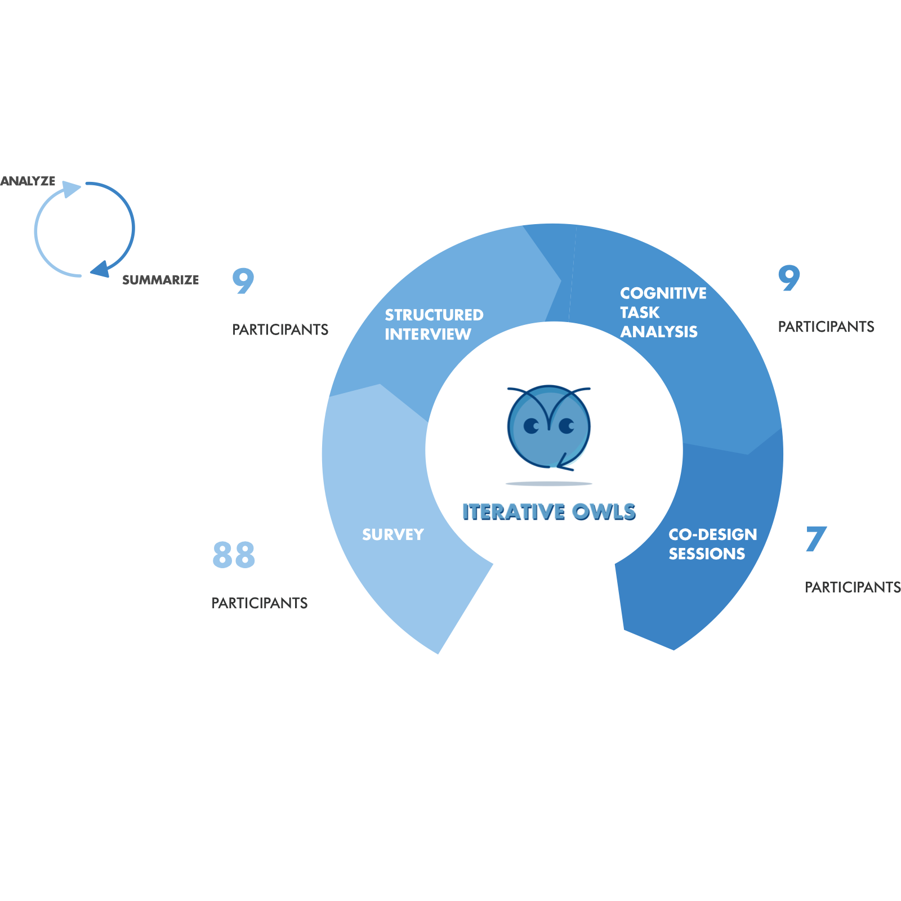

Research
Research processes and key findings
Research Questions
Our research questions pose how technology and writing theory might be combined with learning science to improve a learner’s writing.
1
Constructive Feedback
How does the use of technology with constructive feedback increase learners’ writing abilities?
2
Instructional Activities
How can technology and academic assignments be combined to create effective instructional activities?
3
Self-Editing and Writing Abilities
How does participation in an instructional activity increase learners’ ability to self-edit and improve their writing quality?
4
Confidence and Anxiety
How does participation in instructional activities increase confidence and reduce anxiety in writing tasks?
Background Research
Literature Review
We looked broadly into the literature, exploring fields such as writing theory, writing instruction, social psychology, algorithms, as well as educational writing tools.
Expert Interview
We looked for experts who were researching the areas of writing and NLP—experts who were on the cutting edge in their field and were working with our target population.
Competitive and Content Analysis
When conducting competitive and content analysis, we started broadly, considering everything from grammar tools to online courses. We analyzed contenders by both price and potential benefits and found that Revision Assistant, Grammarly, and NoRedInk are the three major leaders in this problem space.
Background Research Insights
Constructive Feedback: How does the use of technology with constructive feedback increase learners’ writing abilities?
We will use NLP, ML, and, where possible, deep learning techniques to assess learner writing and give timely targeted feedback. Through our research, we found that other technological methods of assessment were insufficient and did not increase learners’ writing abilities.
Self-Editing and Writing Abilities: How does participation in an instructional activity increase learners’ ability to self-edit and improve their writing quality?
Higher-level writing skills and lower-level writing skills are not separate and should be taught simultaneously in writing tasks (Flowers & Hayes, 1981). If we think of writing as a brainstorming activity, we want learners to identify what type of writing they are doing, such as essays or executive summaries. We want them to consider their audience. We then want them to brainstorm their writing before they start to edit (Flower & Hayes, 1981). Once they have a draft, they can get into the lower-level details of their writing, such as grammar, punctuation, and sentence structure.
Instructional Activities: How can technology and academic assignments be combined to create effective instructional activities?
Our research showed that one of our competitors, NoRedInk, let learners do selected-response questions but lacked adequate targeted feedback, whereas Revision Assistant gives learners feedback on writing but does not scaffold writing activities. Our solutions need to scaffold learners’ mastery of necessary writing skills with deliberate practice.
Confidence and Anxiety: How does participation in instructional activities increase confidence and reduce anxiety in writing tasks?
The phases of writing (prewriting, drafting, and rewriting) occur in a somewhat cyclical manner with each phase having several sub-phases. If we can make the cyclical writing process transparent to learners and demonstrate their progress, we can teach them not only to self-correct but also to recognize why they are correcting. In doing so, we can help relieve the initial anxiety writers feel and increase their confidence.
User Research
When conducting user research, we had six primary questions in mind:
How important is writing well to our users?
What are users’ current writing processes?
What are users’ writing ability perceptions?
What barriers inhibit good writing and completing assignments?
What are the current skills demonstrated by both novices and experts?
What are WGU stakeholders’ and potential users’ perceptions of our initial solutions?
Survey
The questions asked about both writing ability perception, in terms of grammar, editing, long-form writing, and other areas of writing, as well as frequency of writing.
Structured Interview
Through our structured interviews, we sought to understand users’ current writing processes, their perception of their writing abilities, and the barriers that inhibit good writing and completion of assignments.
Two team members were present for each interview: one to ask the questions and one to take notes. After the interview, the team member who asked the questions reviewed the notes and transcript.
Cognitive Task Analysis
Through our CTA sessions, in which we had participants speak their thoughts out loud as they completed tasks, we addressed two major groups: experts and novices. Experts are people who have a broad amount of declarative and procedural knowledge in writing, such as professional journalists and creative writing teachers. Novices represent our target users, those for whom our solution will be designed. Initially, we did a theoretical-prescriptive task analysis of how an editing task should be done. We then articulated what skills were needed to perform the task and where the errors might occur (e.g., theoretical-descriptive CTA). After creating two tasks, one for editing a bad paragraph and another to write a short paragraph. we conducted an empirical-prescriptive CTA with experts and an empirical-descriptive CTA with novices.
Codesign
For co-design sessions, we chose to use storyboards using a technique called speed dating. First, we create the story in text, and then we use basic visualizations to help tell that story. We recruited two experts and four other writers ranging from novice to experienced. Getting feedback on these pitches has helped us gain knowledge about the viability of our ideas and allowed us to iterate our designs so that we produce a more mature product solution.
Solution Constraints
After the background and user research, we synthesized all of our findings and insights into three solution constraints, as shown below.